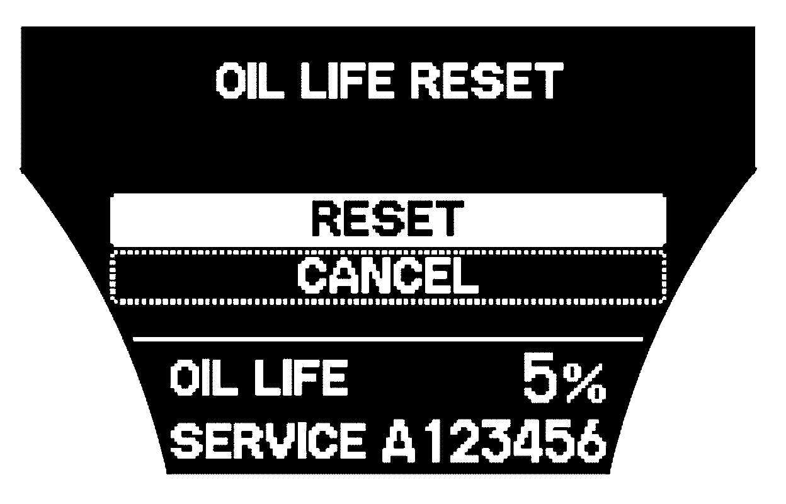

Maintenance Required Lamp/Indicator: Service and Repair
Resetting the Engine Oil Life Display
1. Turn the ignition switch to the ON (II) position.
2. If the engine oil life is not displayed, press the SEL/RESET button on the steering wheel repeatedly until the multi-information display shows blank, SH-AWD and tire pressure.
3. Press and hold the SEL/RESET button on the steering wheel for more than 10 seconds. The remaining engine oil life reset mode will be show on the multi-information display.

4. Select "RESET" by pressing the INFO button, then press the SEL/RESET button to reset the oil life display. The maintenance item code(s) will disappear, and the engine oil life will reset to "100". If you want to cancel the oil life reset mode, select "CANCEL".
For more comprehensive information on reading, interpreting and resetting the MAINTENANCE SERVICE MINDERS viewed on the instrument display, Service Intervals